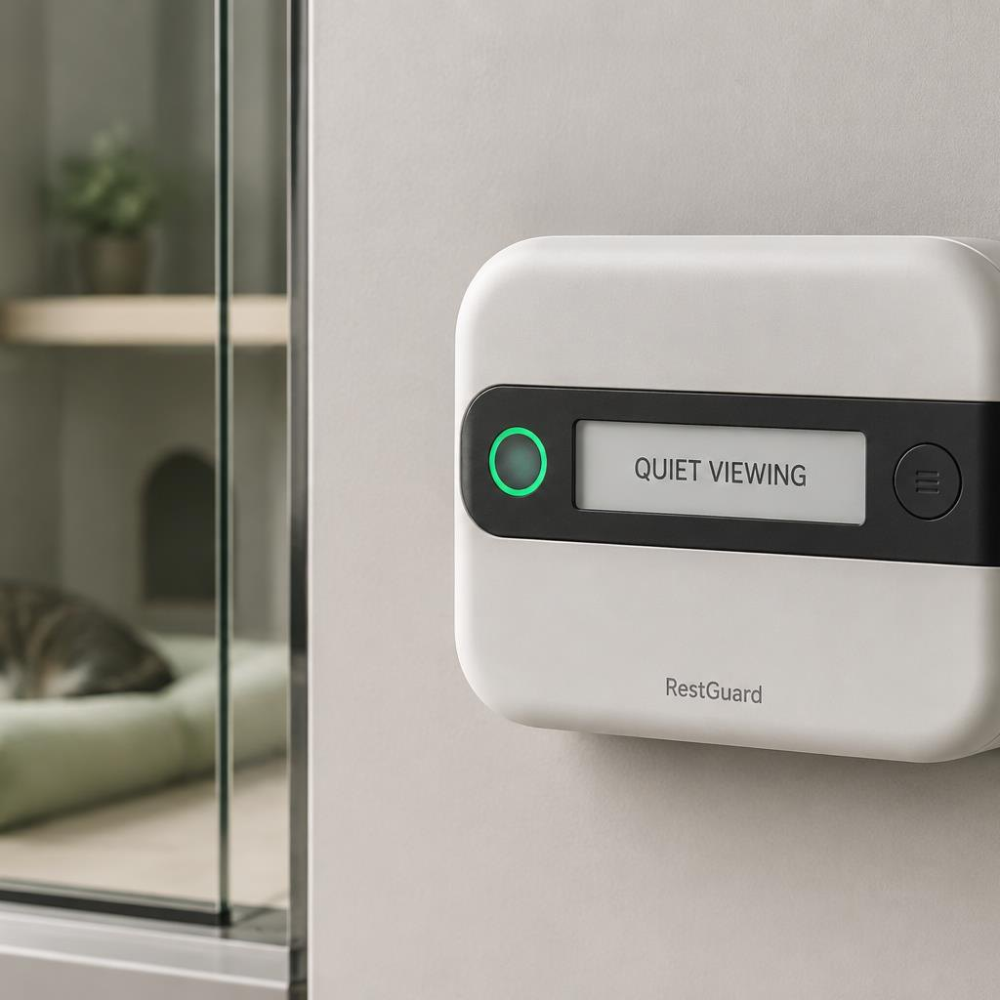
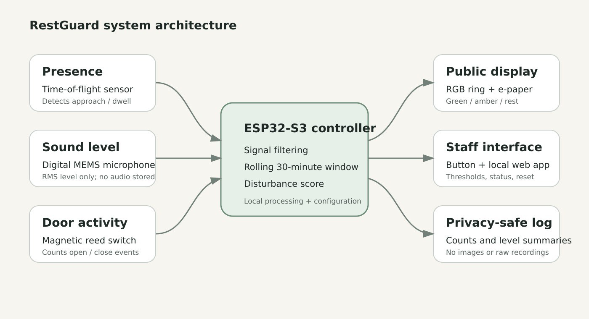
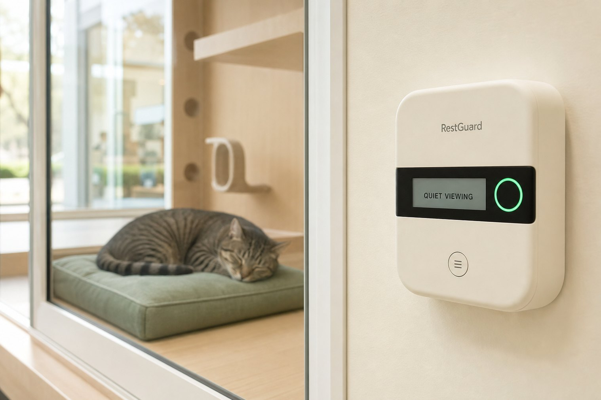

A visitor approaches.
Someone leans in, taps the glass, or stays in the animal’s view.
Engineering design portfolio · 2026
RestGuard sits outside the enclosure. It watches for visitor approach, elevated sound, and door openings, then turns those events into one calm public state for people — and a transparent score for staff.

The opportunity
Someone leans in, taps the glass, or stays in the animal’s view.
Each opening is a handling event staff can miss across a shift.
Conversation and storefront sound accumulate minute by minute.
Design question: how might a small device turn environmental events into clear, humane visitor guidance?
Product concept
Not a diagnosis. RestGuard reports measurable events and offers guidance. Staff judgment always takes priority.
Quiet viewing — observe calmly.
Please give space — disturbance is accumulating.
Rest period — avoid interaction unless staff directs otherwise.
Wearable science · Multi-sensor
Like a precision wearable, RestGuard does not ask one sensor to explain the whole room. Presence, sound and door state work together — and stay explainable.

The VL53L1X is a Class 1 time-of-flight ranger. RestGuard uses it only for the visitor zone — typically 0.3 to 1.5 metres — and requires both entry and dwell before an approach counts. People walking past do not become a score.

The digital MEMS microphone is an I²S sound-level sensor, not a recorder. Only short-window RMS summaries are kept. No waveform, no speech, no archive. Privacy is a hardware story, not a settings toggle.

A reed switch and magnet count open and close events. Door activity is weighted more heavily than a pass-by because it usually means handling. Alignment is a site-calibration task, not an AI guess.

Every second the ESP32-S3 filters invalid samples, updates dwell and sound timers, drops events older than 30 minutes, and applies hysteresis so the ring does not flicker. Green becomes amber at 11 points, and only returns below 8.
The sensing board
The RestGuard RG-SENSE board is a compact ESP32-S3 carrier in the spirit of a strap-mountable tracker: ToF, MEMS microphone, status LEDs and USB-C on one serviceable plate. It never goes on a collar. It never needs a camera.
Industrial design · Exploded view
Recycled ABS/PC blend, matte texture. 100 × 70 × 30 mm proposed enclosure. Colour is always paired with e-paper text.
See the two-piece shell, gasket and modular strap the way a lab demo would walk you through a machine.
The interactive demo lets you add approaches, door events and sound, then watch the ring change.
USB-C power, no sealed battery, tool-accessed rear cover, and a replaceable mount.
System architecture
ToF approach + dwell
RMS, never a recording
Reed open / close
Score, ring, staff app
Signals are processed locally. Outputs are guidance and summaries — no images, no raw audio, no visitor identities.
Interaction design
Prototype formula
D = 2P + 3O + 0.25A
Qualified approaches
Door-open events
Minutes above sound threshold
Every state can be traced back to observable counts — not an opaque emotion label. Hysteresis prevents rapid switching. Colour is always paired with text.
Play with the scoreValidation plan
Qualified approaches, fewer than 10% pass-by false counts.
Fixture test across a full open/close cycle set.
From sensor event to public state change.
Firmware and payload audit: no waveform, image or identifier.
Five staff complete three tasks without instruction.
External mount, captive fasteners, controlled pull test.
A new way to experience the concept
The demo uses the portfolio formula, the three public states, and the staff controls from the report. Add events. Watch the ring. Reset like a carer would after relocation.
Launch RestGuard Demo